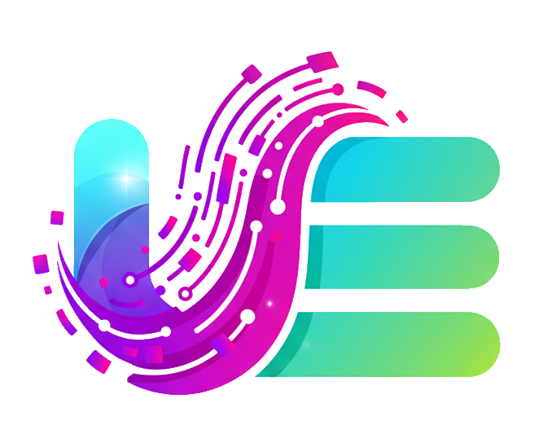

DeepSeek 用量页金额隐藏
v1.1.1deepseek-usage-privacy.user.js
在 DeepSeek 开放平台用量页加一个「小眼睛」，一键把金额（充值余额、消费金额、图表 tooltip）显示为 ***，Alt+M 切换，状态本地记忆
6.8 KB
2026-10-15 09:12

自用油猴脚本集合 · 点「安装」由 Tampermonkey 接管
deepseek-usage-privacy.user.js
在 DeepSeek 开放平台用量页加一个「小眼睛」，一键把金额（充值余额、消费金额、图表 tooltip）显示为 ***，Alt+M 切换，状态本地记忆
devtools-full-function-protection.user.js
一站式解除网页的防调试、重定向、右键屏蔽，同时屏蔽 disable-devtool / devtools-detector，让 DevTools 自由使用。
page-description-generator.user.js
使用 AI 对当前页面内容进行描述分析，生成详细文字，支持快捷键和按钮触发，按钮带loading和折叠功能
twitter-top-button.user.js
在 Twitter / X 页面添加回到顶部按钮，支持快捷键 T
没有匹配的脚本